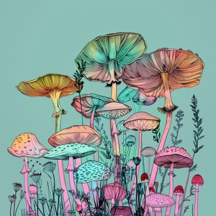

Explore a world of diverse interests and ever-changing topics! The ADHD brain often craves novelty and stimulation. As a result, individuals might frequently seek
out new challenges and experiences, leading to a constantly evolving array of interests and hobbies.
First slide label
Some representative placeholder content for the first slide.
Second slide label
Some representative placeholder content for the second slide.
Third slide label
Some representative placeholder content for the third slide.

Functional mushrooms offer a natural and effective way to boost your health and well-being. Whether you’re
looking to
enhance cognitive function, increase energy levels, or support your immune system, there’s a functional mushroom
to meet
your needs. Embrace these natural wonders and discover the benefits they can bring to your life.
Microphotography of gemstones offers a captivating glimpse into the intricate and hidden beauty of these preciousstones. By using high magnification, photographers can reveal stunning details and patterns that are invisible to the
naked eye, showcasing the natural artistry and complexity of gemstones.
Drawing with pen on black paper utilizes the dramatic interplay between dark and light. The black background serves as a
canvas that makes the white or colored pen strokes pop, creating a vivid and eye-catching effect. This contrast allows
for intricate details to shine, bringing depth and dimension to the artwork.
While functionality is paramount, today's athletic wear doesn't compromise on style. With a wide range of designs and
colors available, you can find pieces that reflect your personal style. Versatile garments can transition seamlessly
from the trail to everyday activities, making them a practical addition to your wardrobe.